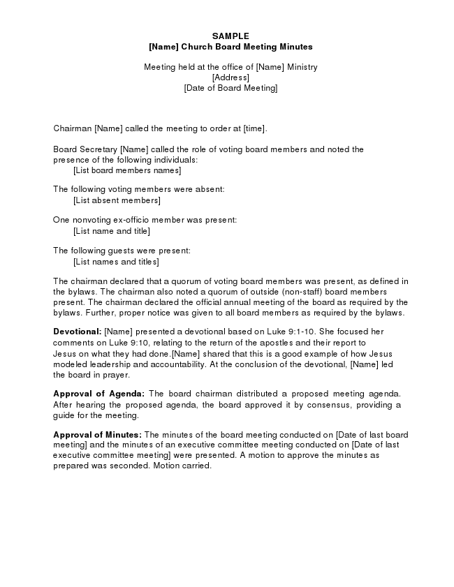

SAMPLE [Name] Church Board Meeting Minutes
Meeting held at the office of [Name] Ministry [Address] [Date of Board Meeting]
Chairman [Name] called the meeting to order at [time].
Board Secretary [Name] called the role of voting board members and noted the presence of the following individuals: [List board members names]
The following voting members were absent:
[List absent members]
One nonvoting ex-officio member was present:
[List name and title]
The following guests were present:
[List names and titles]
The chairman declared that a quorum of voting board members was present, as defined in the bylaws. The chairman also noted a quorum of outside (non-staff) board members present. The chairman declared the official annual meeting of the board as required by the bylaws. Further, proper notice was given to all board members as required by the bylaws.
Devotional: [Name] presented a devotional based on Luke 9:1-10. She focused her comments on Luke 9:10, relating to the return of the apostles and their report to Jesus on what they had done.[Name] shared that this is a good example of how Jesus modeled leadership and accountability. At the conclusion of the devotional, [Name] led the board in prayer.
Approval of Agenda: The board chairman distributed a proposed meeting agenda. After hearing the proposed agenda, the board approved it by consensus, providing a guide for the meeting.
Approval of Minutes: The minutes of the board meeting conducted on [Date of last board meeting] and the minutes of an executive committee meeting conducted on [Date of last executive committee meeting] were presented. A motion to approve the minutes as prepared was seconded. Motion carried.
Presentation of Reports: The following reports were presented and received with appreciation by the board as information:
a) Executive Director Report. [Name] reported on the accomplishments of most of the ministry’s goals for [Year] (complete report attached as exhibit A). He challenged the board to act on the ministry doors that seem to be opening in [Country or place of ministry]. He encouraged the board to start a leadership succession process, since he hopes to retire in three years.
b) COO Report. [Name] shared various ministry operational issues (complete report attached as exhibit B). Finding career missionaries who are willing to commit to the three-year minimum assignment is becoming more difficult. Increasingly, missionaries are only willing to commit to a one-year tour. The training for a one-year tour of duty is about the same as what is required for a longer stay.
c) CFO Report. [Name] reported on the current cash flow challenges (complete report attached as exhibit C). Although giving has been strong for the last month, the establishment of a line of credit may be necessary to provide adequate funding for the next 60 days.
The board recessed at [time] for break.
At [time] the board came back into session. The chairman declared that a quorum was present. The board took up items from the agenda.
Related-Party Transactions: The board secretary reported on the related-party trans-action questionnaires recently completed by each board member. The responses revealed that the following related-party transactions occurred in [Year]:
Board Member Transaction Amount
[Name] Office supplies purchased
from [Name of Store] $_________
[Name] Property insurance purchased
From [Name of Insurance] $_________
It is projected that similar transactions related to the respective board members will occur in [Year]. [Name] recused himself from the meeting while the remaining board members discussed the propriety of the transactions related to his firm.
2005-32. ACTION: After determining that the pricing of office supplies purchased by the ministry from [Name] Office Supply was competitive with other office supply stores and with [Name] recused from both the meeting and the voting, the motion was made and seconded to approve continuing purchases of office supplies from [Name of Office Supply]. Motion carried.
[Name] returned to the board meeting and [Name] recused herself from the meeting while the remaining board members discussed the propriety of the transactions related to her organization.
2005-33. ACTION: After determining that the pricing of property insurance purchased by the ministry from [Name] Insurance was competitive with other property insurance agents and with [Name] recused from both the meeting and the voting, a motion was made and seconded to approve continuing purchases of property insurance from [Name] Insurance. Motion carried.
Election of Officers: All nominees for offices were excused from the meeting while their nominations were discussed and voted upon. The following slate of proposed officers was presented from the nominating committee:
Chairman: [Name] Vice Chairman: [Name] Secretary: [Name] Treasurer: [Name]
2005-34. ACTION: A motion was made and seconded to approve the slate of officers as presented. Motion carried.
Election of Board Members: [Names] complete their first three-year term of service at the conclusion of this board meeting (see exhibit D for board members by class). The nominating committee recommends that all three of these individuals be elected for their second three-year term of service.
2005-35. ACTION: A motion was made and seconded to approve [Names] for their second three-year term of service as board members. Motion carried (vote was taken after the nominees were recused from the meeting).
Opening of New Mission Field: The executive director presented a proposal (attached as exhibit E) for opening a new mission field in [Country] in [Year]. The first- year budget would be $[Amount] and include one field director plus four career missionaries.
2005-36. ACTION: A motion was made and seconded to approve the opening of a new mission field in [Country] in [Year] with a first-year budget of $[Amount]. The $[Amount] budget for this field is included in the annual budget to be considered by the board in this meeting.
A motion was made and seconded to increase the [Year] budget for the new field to $[Amount]. The motion failed.
The chairman stated that the original motion was now before the board. Motion carried.
Policy on Borrowing of Temporarily Restricted Net Assets: The board chairman reported that $[Amount] of temporarily restricted net assets have been borrowed and expended in the unrestricted net asset class as of [Date]. It does not appear that any of this borrowing can be repaid by the organization’s year-end, [Date].
2005-37. ACTION: After discussing the impropriety of borrowing temporarily restricted net assets, other than on a short-term basis, the motion was made and seconded to adopt the following policy (this new policy will be identified as Policy 48-0 3): Temporarily restricted net assets shall not be borrowed for operational purposes. In the event some temporarily restricted net assets are borrowed for operational purposes, the funds shall be repaid within 12 months. Motion carried.
2005-38. ACTION: With respect to the $[Amount] that has been borrowed from temporarily restricted net assets, the motion was made and seconded that the approximate $[Amount] balance as of [Date] which has been borrowed from temporarily restricted net assets for operational purposes shall be repaid during [Year]. Motion carried.
Leadership Succession: The board discussed the executive director’s announcement of his plan to retire in three years, and expressed appreciation to the executive director for providing advance notice.
2005-39. ACTION: The motion was made and seconded to appoint a committee of three board members to be named by the board chairman, who will begin the search process for an individual to succeed the current executive director.
Annual Budget: The CFO presented the [Year] budget (see exhibit F). This version of the budget incorporates the changes to the version of the [Year] budget reviewed by the board in the [Date] board meeting.
2005-40. ACTION: After a brief discussion of the guidelines used to construct the budget, the motion was made and seconded to approve the [Year] budget as presented. Motion carried.
Audit Committee: The audit committee reported on its recent meeting with representatives of the audit firm at which the planning for the audit for the year ended [Date] was discussed. The audit committee asked the auditors to focus especially on the four management letter recommendations made by the auditors at the conclusion of the [Year] audit, with a view to determining if staff had adequately made the changes in accounting practices and procedures to address the concerns of the auditors. The board received this report as information.
If this was the first board meeting after completion of the audit and management letter, the following entries in the minutes might be appropriate:
Review of Audit and Management Letter: The audit committee reported on the committee’s review of the audit and the management letter. The committee met with the auditors on [Date]. A portion of this meeting was held in the absence of staff.
The committee believes staff has appropriately followed through on all of the auditor’s prior year management letter recommendations. Further, the committee instituted adequate procedures to follow-up with staff on the current year’s management letter recommendations.
Executive Director Review: The executive committee reported that it had completed the annual review of the executive director. A summary of the review was distributed to the board. This summary was filed with the permanent board documents, but it was not made a part of the minutes of this board meeting. The board received this report as information.
Executive Compensation: The executive committee reported on its annual review of the executive director’s compensation. A detailed analysis of current pay, proposed pay, and the propriety of the proposed pay based on comparative compensation studies was distributed to the board, but it was not made a part of the minutes of this board meeting.
2005-41. ACTION: The motion was made and seconded to approve the adjustments in the gross pay and fringe benefits of the executive director as recommended by the executive committee. Motion carried.
Housing Allowances: The executive committee reported that staff members [Names] are ordained, licensed, and commissioned ministers, whose substantive involvement in preaching and leading Bible studies, has been very carefully documented as a part of their employment with the ministry.
2005-42. ACTION: The motion was made and seconded to approve a housing allowance of $[Amount] for [Name] and $[Amount] for [Name] for [Year] under Section 107 of the Internal Revenue Code. Each of these ministers is responsible for paying their own self-employment social security tax. Motion carried.
Line of Credit: The board discussed whether it was necessary to enter into a line of credit agreement with [Name of Bank], the primary financial institution currently serving the ministry.
2005-43. ACTION: A motion was made and seconded to approve a line of credit with [Name of Bank] for a maximum of $[Amount] and to authorize the Board Secretary and CFO to execute the necessary documents. Motion carried.
Board Self-Assessment: The board devoted a short time to self-assessment of this board meeting. It was the consensus of the board that the meeting was well focused on policies and mission-critical issues.
Future Meetings: The following schedule of board meetings was presented:
[Date]: The board is to meet in [City and State], at [Time]. The exact location will be announced later.
[Date]: The board is to meet at the ministry’s headquarters in [City].
The chairman declared the meeting adjourned at [Time].
_______________________________________ Secretary